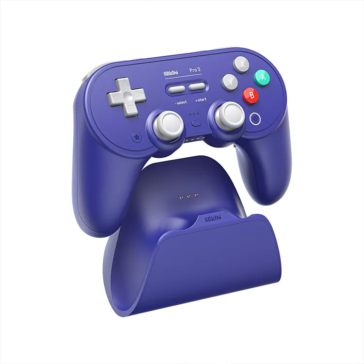

8bitDo Pro 3 Bluetooth
Un control con estética única, equipado con una personalización de otro nivel.
$90.00 USD
- Joysticks TMR: la mejor tecnología anti drift y equipados con una precisión extrema
- 3 modos de conexión: A través del receptor de 2.4 Ghz, cableado o Bluetooth
- Botones ABXY magnéticos intercambiables: cambia fácilmente entre los diseños de Switch y Xbox con el extractor de botones incluido.
- Compatibilidad nativa con Nintendo Switch 2, Nintendo Switch, PC y dispositivos móviles.
- Incluye 2 botones traseros de nivel profesional, bumpers R4/L4 adicionales para reacciones rápidas, un D-pad táctil, 3 perfiles personalizados y 2 tapas de joystick de bola.:
- Gatillos con modo analógico y modo recortado: Dependiendo del juego conviene una reacción mas rápida (sobre todo en competitivo) o más precisa para juegos de carrera.
- Base de carga integrada: una base de carga perfectamente integrada mantiene tu controlador siempre cargado y listo para jugar. Se vuelve a conectar automáticamente cuando se quita del dock.